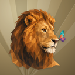
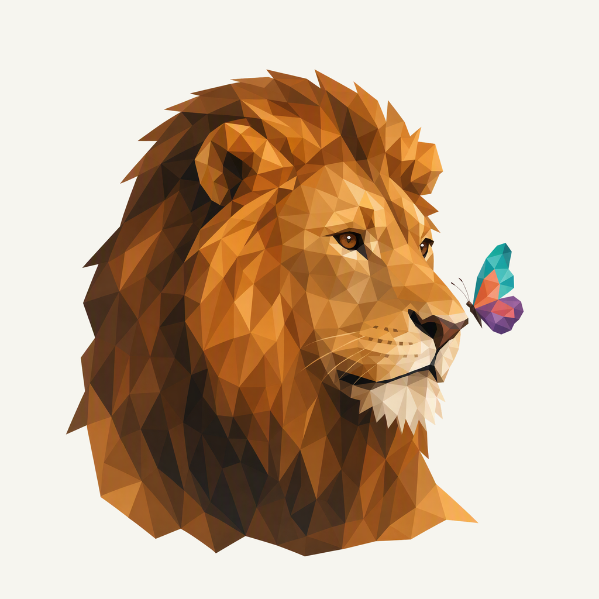
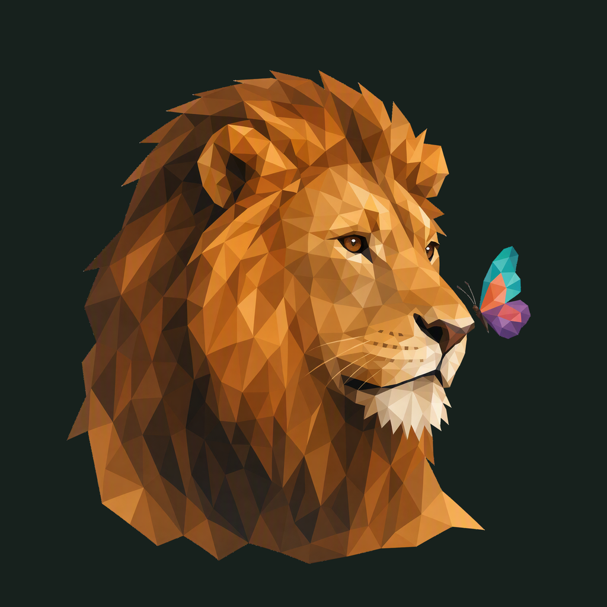

01 / Composition
The guardian pauses
The complete irregular mane frames a quiet head turn. A butterfly beside the nose adds a single secondary focus; the whole group sits safely inside the rounded tile.
Animal family · Refined identity
A calm amber lion pauses to watch a butterfly. One warm mane, one small flash of color.
Adopted redesign · finishing 01
Native 2048 × 2048
01 / Composition
The complete irregular mane frames a quiet head turn. A butterfly beside the nose adds a single secondary focus; the whole group sits safely inside the rounded tile.
02 / Drawing
Broad honey and umber planes describe the face and mane. The former tiger identity is replaced by a recognizable lion, with color concentrated in one small butterfly.
03 / Presentation
Unequal fan folds spread from a low off-center pivot. Deeper ochre, fine grain and shallow shadows give the mane separation without competing with its expression.
Presentation tiles at 128/64 px; transparent artwork for small app and browser marks.

The whole mane and butterfly stay inside the rounded outline with at least 145.5 px of native clearance. Small marks use the transparent lion; butterfly details simplify at 16 px.
A designed background, with colors sampled from the exact native artwork.
Select a swatch to copy its hex value. The Surety UI primary (#ED511D) remains a separate product color.
One transparent foreground, checked on two contrasting backgrounds.


Azure Foundry · gpt-image-2 · one request · native 2048 × 2048
Loading study text…
The previous identity is historical context; the current brief defines the selected animal, gesture and palette. Frogie guides connected flat facets; these owner-provided boards guide the independent background, offset framing, and matte surface.


{kind=link}
{kind=link}
{kind=link}
{kind=link}
{kind=link}